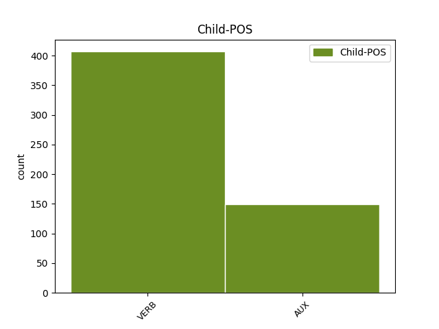

Distribution of features within this leaf

Agreement Rules sorted by frequency.
- When the dependent token is the conjunct(conj) of the head token, and the dependent token is VERB.
1 Simmer _ _ _ _ 0 _ _ _
2 the _ _ _ _ 0 _ _ _
3 quinoa _ _ _ _ 0 _ _ _
4 for _ _ _ _ 0 _ _ _
5 about _ _ _ _ 0 _ _ _
6 15 _ _ _ _ 0 _ _ _
7 minutes _ _ _ _ 0 _ _ _
8 or _ _ _ _ 0 _ _ _
9 until _ _ _ _ 0 _ _ _
10 the _ _ _ _ 0 _ _ _
11 grain _ _ _ _ 0 _ _ _
12 becomes become VERB VBZ Mood=Ind|Number=Sing|Person=3|Tense=Pres|VerbForm=Fin 0 _ _ _
13 translucent _ _ _ _ 0 _ _ _
14 and _ _ _ _ 0 _ _ _
15 the _ _ _ _ 0 _ _ _
16 white _ _ _ _ 0 _ _ _
17 germ _ _ _ _ 0 _ _ _
18 forms form VERB VBZ Mood=Ind|Number=Sing|Person=3|Tense=Pres|VerbForm=Fin 12 conj _ _
19 a _ _ _ _ 0 _ _ _
20 visible _ _ _ _ 0 _ _ _
21 spiral _ _ _ _ 0 _ _ _
22 on _ _ _ _ 0 _ _ _
23 the _ _ _ _ 0 _ _ _
24 exterior _ _ _ _ 0 _ _ _
25 of _ _ _ _ 0 _ _ _
26 the _ _ _ _ 0 _ _ _
27 quinoa _ _ _ _ 0 _ _ _
28 grain _ _ _ _ 0 _ _ _
29 . _ _ _ _ 0 _ _ _
1 If _ _ _ _ 0 _ _ _
2 you _ _ _ _ 0 _ _ _
3 bought _ _ _ _ 0 _ _ _
4 packaged _ _ _ _ 0 _ _ _
5 quinoa _ _ _ _ 0 _ _ _
6 , _ _ _ _ 0 _ _ _
7 this _ _ _ _ 0 _ _ _
8 step _ _ _ _ 0 _ _ _
9 is be AUX VBZ Mood=Ind|Number=Sing|Person=3|Tense=Pres|VerbForm=Fin 0 _ _ _
10 n't _ _ _ _ 0 _ _ _
11 always _ _ _ _ 0 _ _ _
12 necessary _ _ _ _ 0 _ _ _
13 , _ _ _ _ 0 _ _ _
14 but _ _ _ _ 0 _ _ _
15 it _ _ _ _ 0 _ _ _
16 's be AUX VBZ Mood=Ind|Number=Sing|Person=3|Tense=Pres|VerbForm=Fin 9 conj _ _
17 better _ _ _ _ 0 _ _ _
18 to _ _ _ _ 0 _ _ _
19 be _ _ _ _ 0 _ _ _
20 safe _ _ _ _ 0 _ _ _
21 than _ _ _ _ 0 _ _ _
22 sorry _ _ _ _ 0 _ _ _
23 . _ _ _ _ 0 _ _ _
Disagree Examples:
1 This _ _ _ _ 0 _ _ _
2 pilot _ _ _ _ 0 _ _ _
3 project _ _ _ _ 0 _ _ _
4 primarily _ _ _ _ 0 _ _ _
5 investigated investigate VERB VBD Mood=Ind|Tense=Past|VerbForm=Fin 0 _ _ _
6 how _ _ _ _ 0 _ _ _
7 participants _ _ _ _ 0 _ _ _
8 visually _ _ _ _ 0 _ _ _
9 explore _ _ _ _ 0 _ _ _
10 artworks _ _ _ _ 0 _ _ _
11 and _ _ _ _ 0 _ _ _
12 provides provide VERB VBZ Mood=Ind|Number=Sing|Person=3|Tense=Pres|VerbForm=Fin 5 conj _ _
13 new _ _ _ _ 0 _ _ _
14 insights _ _ _ _ 0 _ _ _
15 into _ _ _ _ 0 _ _ _
16 the _ _ _ _ 0 _ _ _
17 potential _ _ _ _ 0 _ _ _
18 eye-tracking _ _ _ _ 0 _ _ _
19 has _ _ _ _ 0 _ _ _
20 to _ _ _ _ 0 _ _ _
21 transform _ _ _ _ 0 _ _ _
22 the _ _ _ _ 0 _ _ _
23 ways _ _ _ _ 0 _ _ _
24 we _ _ _ _ 0 _ _ _
25 understand _ _ _ _ 0 _ _ _
26 visual _ _ _ _ 0 _ _ _
27 processing _ _ _ _ 0 _ _ _
28 in _ _ _ _ 0 _ _ _
29 arts _ _ _ _ 0 _ _ _
30 and _ _ _ _ 0 _ _ _
31 culture _ _ _ _ 0 _ _ _
32 and _ _ _ _ 0 _ _ _
33 at _ _ _ _ 0 _ _ _
34 the _ _ _ _ 0 _ _ _
35 same _ _ _ _ 0 _ _ _
36 time _ _ _ _ 0 _ _ _
37 offer _ _ _ _ 0 _ _ _
38 a _ _ _ _ 0 _ _ _
39 direct _ _ _ _ 0 _ _ _
40 way _ _ _ _ 0 _ _ _
41 of _ _ _ _ 0 _ _ _
42 studying _ _ _ _ 0 _ _ _
43 several _ _ _ _ 0 _ _ _
44 important _ _ _ _ 0 _ _ _
45 factors _ _ _ _ 0 _ _ _
46 of _ _ _ _ 0 _ _ _
47 a _ _ _ _ 0 _ _ _
48 museum _ _ _ _ 0 _ _ _
49 visit _ _ _ _ 0 _ _ _
50 , _ _ _ _ 0 _ _ _
51 namely _ _ _ _ 0 _ _ _
52 to _ _ _ _ 0 _ _ _
53 assess _ _ _ _ 0 _ _ _
54 the _ _ _ _ 0 _ _ _
55 effects _ _ _ _ 0 _ _ _
56 of _ _ _ _ 0 _ _ _
57 label _ _ _ _ 0 _ _ _
58 characteristics _ _ _ _ 0 _ _ _
59 on _ _ _ _ 0 _ _ _
60 visitor _ _ _ _ 0 _ _ _
61 visual _ _ _ _ 0 _ _ _
62 behaviour _ _ _ _ 0 _ _ _
63 . _ _ _ _ 0 _ _ _
1 On _ _ _ _ 0 _ _ _
2 the _ _ _ _ 0 _ _ _
3 surface _ _ _ _ 0 _ _ _
4 , _ _ _ _ 0 _ _ _
5 it _ _ _ _ 0 _ _ _
6 does do AUX VBZ Mood=Ind|Number=Sing|Person=3|Tense=Pres|VerbForm=Fin 0 _ _ _
7 seem _ _ _ _ 0 _ _ _
8 as _ _ _ _ 0 _ _ _
9 if _ _ _ _ 0 _ _ _
10 there _ _ _ _ 0 _ _ _
11 is _ _ _ _ 0 _ _ _
12 variability _ _ _ _ 0 _ _ _
13 and _ _ _ _ 0 _ _ _
14 perhaps _ _ _ _ 0 _ _ _
15 a _ _ _ _ 0 _ _ _
16 larger _ _ _ _ 0 _ _ _
17 sample _ _ _ _ 0 _ _ _
18 size _ _ _ _ 0 _ _ _
19 or _ _ _ _ 0 _ _ _
20 more _ _ _ _ 0 _ _ _
21 items _ _ _ _ 0 _ _ _
22 could _ _ _ _ 0 _ _ _
23 lead _ _ _ _ 0 _ _ _
24 to _ _ _ _ 0 _ _ _
25 a _ _ _ _ 0 _ _ _
26 significant _ _ _ _ 0 _ _ _
27 finding _ _ _ _ 0 _ _ _
28 ( _ _ _ _ 0 _ _ _
29 see _ _ _ _ 0 _ _ _
30 limitations _ _ _ _ 0 _ _ _
31 below _ _ _ _ 0 _ _ _
32 ) _ _ _ _ 0 _ _ _
33 , _ _ _ _ 0 _ _ _
34 but _ _ _ _ 0 _ _ _
35 at _ _ _ _ 0 _ _ _
36 least _ _ _ _ 0 _ _ _
37 for _ _ _ _ 0 _ _ _
38 this _ _ _ _ 0 _ _ _
39 study _ _ _ _ 0 _ _ _
40 , _ _ _ _ 0 _ _ _
41 the _ _ _ _ 0 _ _ _
42 only _ _ _ _ 0 _ _ _
43 significant _ _ _ _ 0 _ _ _
44 finding _ _ _ _ 0 _ _ _
45 was be AUX VBD Mood=Ind|Number=Sing|Person=3|Tense=Past|VerbForm=Fin 6 conj _ _
46 the _ _ _ _ 0 _ _ _
47 difference _ _ _ _ 0 _ _ _
48 between _ _ _ _ 0 _ _ _
49 cardinal _ _ _ _ 0 _ _ _
50 numbers _ _ _ _ 0 _ _ _
51 and _ _ _ _ 0 _ _ _
52 some _ _ _ _ 0 _ _ _
53 . _ _ _ _ 0 _ _ _
1 It _ _ _ _ 0 _ _ _
2 is _ _ _ _ 0 _ _ _
3 possible _ _ _ _ 0 _ _ _
4 that _ _ _ _ 0 _ _ _
5 these _ _ _ _ 0 _ _ _
6 two _ _ _ _ 0 _ _ _
7 children _ _ _ _ 0 _ _ _
8 understood _ _ _ _ 0 _ _ _
9 the _ _ _ _ 0 _ _ _
10 task _ _ _ _ 0 _ _ _
11 and _ _ _ _ 0 _ _ _
12 really _ _ _ _ 0 _ _ _
13 did do AUX VBD Mood=Ind|Tense=Past|VerbForm=Fin 0 _ _ _
14 believe _ _ _ _ 0 _ _ _
15 that _ _ _ _ 0 _ _ _
16 the _ _ _ _ 0 _ _ _
17 puppet _ _ _ _ 0 _ _ _
18 did _ _ _ _ 0 _ _ _
19 not _ _ _ _ 0 _ _ _
20 produce _ _ _ _ 0 _ _ _
21 any _ _ _ _ 0 _ _ _
22 poor _ _ _ _ 0 _ _ _
23 descriptions _ _ _ _ 0 _ _ _
24 , _ _ _ _ 0 _ _ _
25 and _ _ _ _ 0 _ _ _
26 in _ _ _ _ 0 _ _ _
27 this _ _ _ _ 0 _ _ _
28 regard _ _ _ _ 0 _ _ _
29 , _ _ _ _ 0 _ _ _
30 are be AUX VBP Mood=Ind|Tense=Pres|VerbForm=Fin 13 conj _ _
31 not _ _ _ _ 0 _ _ _
32 yet _ _ _ _ 0 _ _ _
33 adult-like _ _ _ _ 0 _ _ _
34 in _ _ _ _ 0 _ _ _
35 their _ _ _ _ 0 _ _ _
36 SI _ _ _ _ 0 _ _ _
37 interpretations _ _ _ _ 0 _ _ _
38 . _ _ _ _ 0 _ _ _
1 For _ _ _ _ 0 _ _ _
2 example _ _ _ _ 0 _ _ _
3 , _ _ _ _ 0 _ _ _
4 the _ _ _ _ 0 _ _ _
5 Instruments _ _ _ _ 0 _ _ _
6 for _ _ _ _ 0 _ _ _
7 Research _ _ _ _ 0 _ _ _
8 into _ _ _ _ 0 _ _ _
9 Second _ _ _ _ 0 _ _ _
10 Languages _ _ _ _ 0 _ _ _
11 ( _ _ _ _ 0 _ _ _
12 IRIS _ _ _ _ 0 _ _ _
13 ) _ _ _ _ 0 _ _ _
14 repository _ _ _ _ 0 _ _ _
15 ( _ _ _ _ 0 _ _ _
16 http://www.irisdatabase.org _ _ _ _ 0 _ _ _
17 ) _ _ _ _ 0 _ _ _
18 was be AUX VBD Mood=Ind|Number=Sing|Person=3|Tense=Past|VerbForm=Fin 0 _ _ _
19 established _ _ _ _ 0 _ _ _
20 in _ _ _ _ 0 _ _ _
21 2011 _ _ _ _ 0 _ _ _
22 and _ _ _ _ 0 _ _ _
23 holds hold VERB VBZ Mood=Ind|Number=Sing|Person=3|Tense=Pres|VerbForm=Fin 18 conj _ SpaceAfter=No
24 , _ _ _ _ 0 _ _ _
25 at _ _ _ _ 0 _ _ _
26 the _ _ _ _ 0 _ _ _
27 time _ _ _ _ 0 _ _ _
28 of _ _ _ _ 0 _ _ _
29 writing _ _ _ _ 0 _ _ _
30 , _ _ _ _ 0 _ _ _
31 over _ _ _ _ 0 _ _ _
32 3,800 _ _ _ _ 0 _ _ _
33 materials _ _ _ _ 0 _ _ _
34 that _ _ _ _ 0 _ _ _
35 can _ _ _ _ 0 _ _ _
36 be _ _ _ _ 0 _ _ _
37 used _ _ _ _ 0 _ _ _
38 for _ _ _ _ 0 _ _ _
39 replication _ _ _ _ 0 _ _ _
40 , _ _ _ _ 0 _ _ _
41 among _ _ _ _ 0 _ _ _
42 other _ _ _ _ 0 _ _ _
43 purposes _ _ _ _ 0 _ _ _
44 , _ _ _ _ 0 _ _ _
45 in _ _ _ _ 0 _ _ _
46 L2 _ _ _ _ 0 _ _ _
47 research _ _ _ _ 0 _ _ _
48 ( _ _ _ _ 0 _ _ _
49 Marsden _ _ _ _ 0 _ _ _
50 & _ _ _ _ 0 _ _ _
51 Mackey _ _ _ _ 0 _ _ _
52 , _ _ _ _ 0 _ _ _
53 2014 _ _ _ _ 0 _ _ _
54 ; _ _ _ _ 0 _ _ _
55 Marsden _ _ _ _ 0 _ _ _
56 , _ _ _ _ 0 _ _ _
57 Mackey _ _ _ _ 0 _ _ _
58 , _ _ _ _ 0 _ _ _
59 & _ _ _ _ 0 _ _ _
60 Plonsky _ _ _ _ 0 _ _ _
61 , _ _ _ _ 0 _ _ _
62 2016 _ _ _ _ 0 _ _ _
63 ) _ _ _ _ 0 _ _ _
64 . _ _ _ _ 0 _ _ _
1 Évariste _ _ _ _ 0 _ _ _
2 Galois _ _ _ _ 0 _ _ _
3 was be AUX VBD Mood=Ind|Number=Sing|Person=3|Tense=Past|VerbForm=Fin 0 _ _ _
4 buried _ _ _ _ 0 _ _ _
5 in _ _ _ _ 0 _ _ _
6 a _ _ _ _ 0 _ _ _
7 common _ _ _ _ 0 _ _ _
8 grave _ _ _ _ 0 _ _ _
9 and _ _ _ _ 0 _ _ _
10 the _ _ _ _ 0 _ _ _
11 exact _ _ _ _ 0 _ _ _
12 location _ _ _ _ 0 _ _ _
13 is be AUX VBZ Mood=Ind|Number=Sing|Person=3|Tense=Pres|VerbForm=Fin 3 conj _ _
14 still _ _ _ _ 0 _ _ _
15 unknown _ _ _ _ 0 _ _ _
16 . _ _ _ _ 0 _ _ _